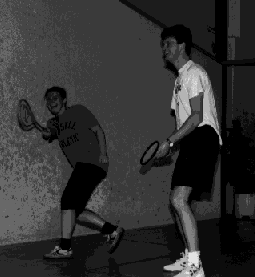

Squash

- Sammen med Arthur Anderen & Co. har Andersen Consulting et squash-tilbud
til de ansatte. Vi er omtrent 50 aktive som spiller squash. Banene
leier vi på Friskoteket og Lysaker Squash. I tillegg til vanlig
mosjons-spill har vi en squash-stige med ca. 20 spillere. Her er
mulighetene store for å treffe kollegaer. Vi har også tre lag i Oslo
Bedriftsidrettskrets lagserie. Et damelag og to herrelag. Alle lagene
hevder seg meget bra.
- En gang i året arrangerer vi et squash-mesterskap for alle som vil være
med. Vi pleier å leie hele Lysaker Squash som stiller med sportsdrikke
og proff holdning.
- Squash er gøy!